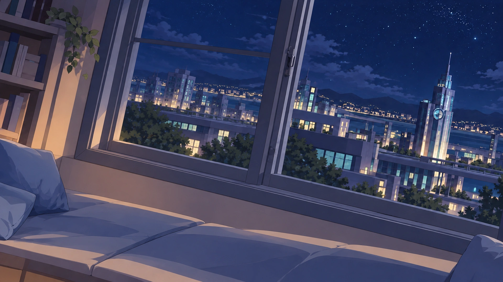
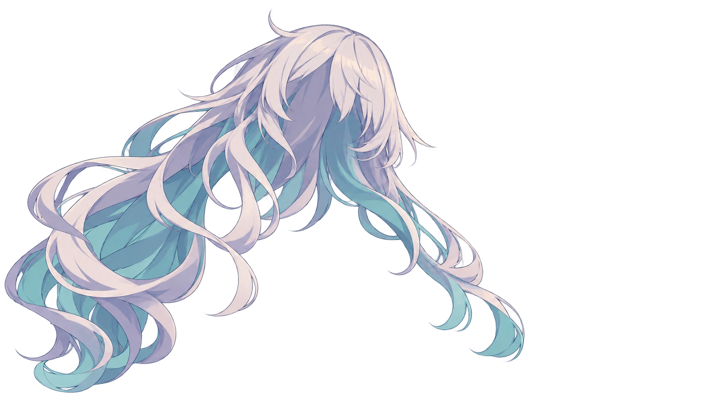
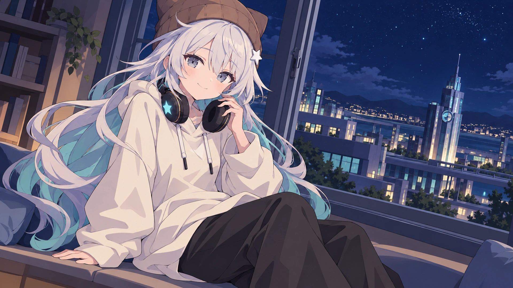

← 에셋 라이브러리
MUTBYEOL · STARRY NIGHT
뭇별 · MEMORIAL LOBBY
별빛이 머무는 창가
…밖에 별, 꽤 잘 보이지?
별빛이 머무는 창가
그림을 겹쳐 만든 레이어 애니메이션입니다.
캐릭터를 누르면 작은 반응을 보여요.
실내의 은은한 빛
조명
별빛 반짝임
밤하늘
눈 깜빡임
표정
감은 눈 확인
머리카락 흔들림
움직임
뭇별 · 호흡
캐릭터
빈 방 · 밤 도시
배경
커서 깊이 이동
시차
처음 만든 낮 버전 보기 ↗
일시 정지
원본 비교
레이어 보기
그림만 보기
별빛이 머무는 창가를 준비하고 있어요…
뭇별 · 밤 도시